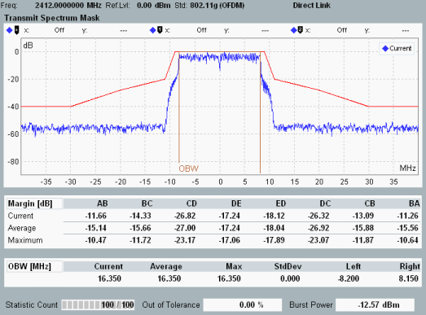

The "Transmit Spectrum Mask" view comprises a diagram and a table of statistical results.

The spectrum measurement covers a symmetric frequency range that is four times the channel bandwidth wide. The 0-MHz point of the X-axis is at the center of the channel.
A value of 0 dB corresponds to the maximum power value (DSSS) or spectral density (OFDM) of the signal measured within the current burst.
The "Margin" table below the diagram contains values which are relevant for the limit check, see "Transmit Spectrum Mask DSSS" and subsequent sections. The "Margin" values indicate the vertical distance between the spectrum mask and the result trace. For each section S of the spectrum mask (e.g. "AB" or "DC"), Margin(S) represents the "worst" trace value:
Margin(S) = max {Trace(f) - Limit(f) | f in S}
A positive margin indicates that the limit is exceeded. Margin results are displayed for the current, average and maximum trace.
For 80+80 MHz signals, the margin results are available per segment. For small channel distances, both segments are covered by a single diagram, with the 0-MHz point of the X-axis at the center of the left segment. For large channel distances, there are two diagrams - one per segment.
Transmit spectrum mask measurements in combined signal path are supported only with an R&S CMW with TRX160 and only up to 40 MHz. |
For additional information, refer to "Common View Elements".